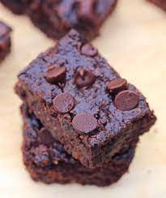

The Best Desserts
Balance is key! Treat your self to the best desserts that satisfy all your sugar cravings. All Recepies can be made dairy free.

Black Bean Brownies
Ingredients
- 1/2 cup of black beans
- 2 tbso cocoa powder
- 1/2 cup almond flower
- 1/4 tsp salt
- 1/2 cup of agave
- 1/4 cup of vegetable oil
- 2 tsp vanilla extract
- 1/2 tsp baking powder
- 2/3 cup of non dairy chocolate chips (my favorite brand is EnjoyLife)
Instructions
- preheat the overn to 350 F
- combine all ingredients in a food processor and blend very well. This may take a few minuets, the smoother the better.
- Pot into an 8x8 greased pan
- add extra chocolate chips to the top of the batter for decoration
- bake for 16 minuets!
- My faovirte way to eat these is after letting them sit in the freezer for 15-20 minetes after they have cooled, then keeping them in the fridge to eat later.

Gluten Free Chocolate Cake
Ingredients
- 1 1/2 cup of sugar
- 1 1/2 cups of almond flour
- 1 cup cocoa powder
- 2 1/2 tsp baking powder
- 1 tsp salt
- 2/3 cup vegetable oil
- 4 eggs
- 1 1/3 cups water
- 2 tsp vanilla extract
Instructions
- preheat the overn to 350 F
- whisk together sugar, flour, cocoa, baking powder, and salt in a bowl.
- beat the oil, eggs and water into the bowl.
- once all the ingredients are mixed, beat the batter for 2 minutes.
- Pour batter into 2 9 inch circular pans.
- Bake for 30 minutes.

Chocolate Covered Strawberries
Ingredients
- 15-20 strawberries
- one bag of enjoyLife chocolate chips
Instructions
- Melt enjoyLife chocolate in a sauce man on medium-low heat until smooth.
- Once the choclate is melted, dip the strawberries in the chocolate and place on wax paper to dry.
- Let the covered strawberries sit in the fridge for 1-3 hourss.